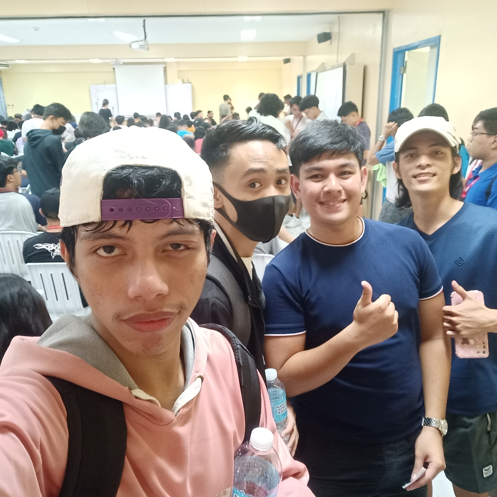
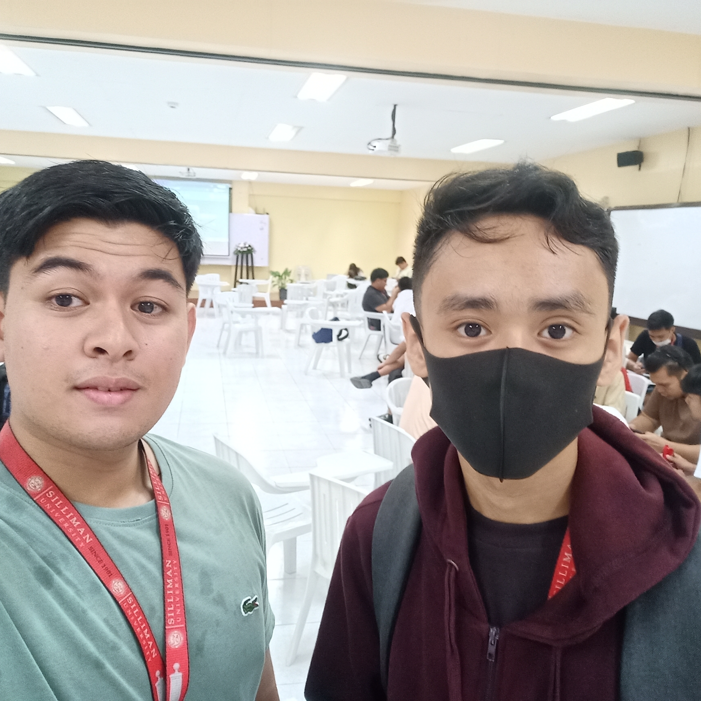
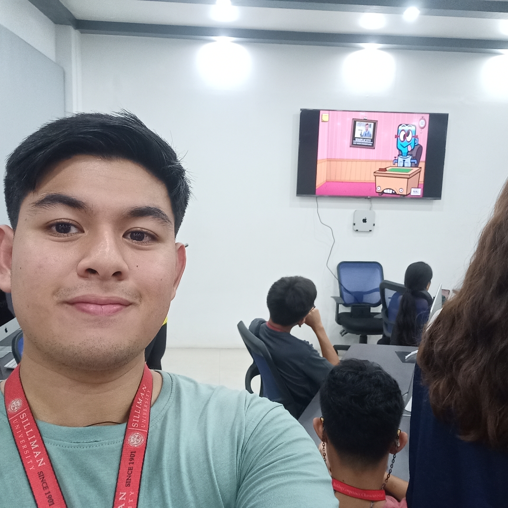
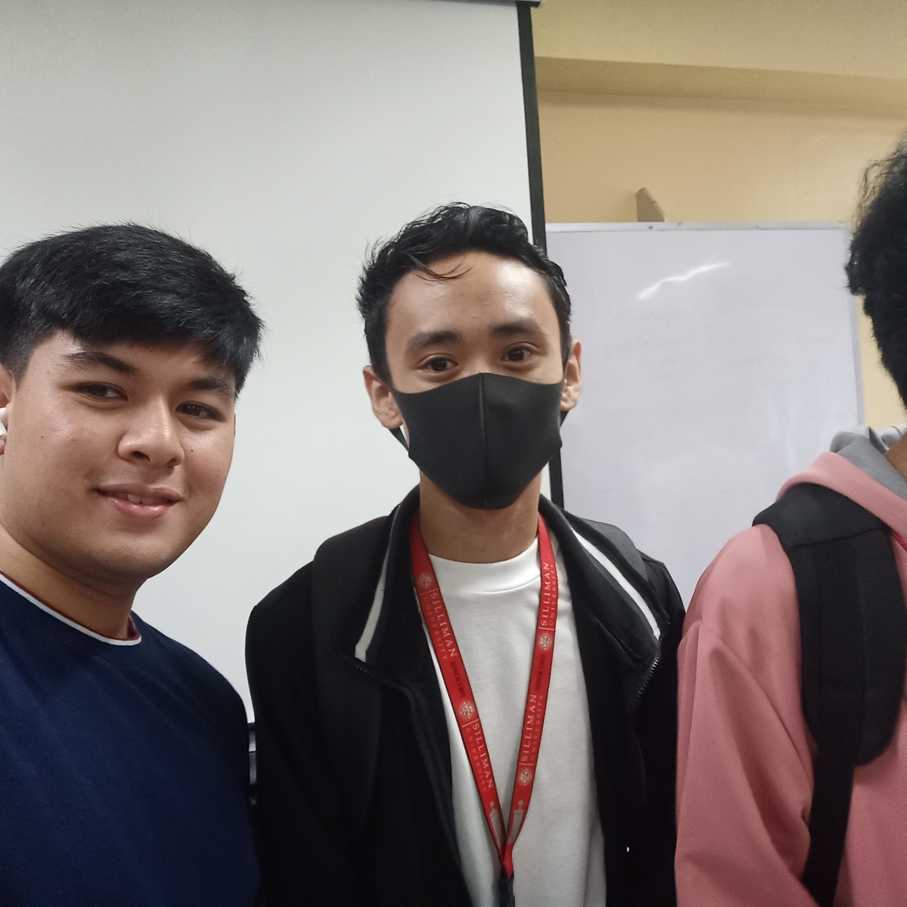
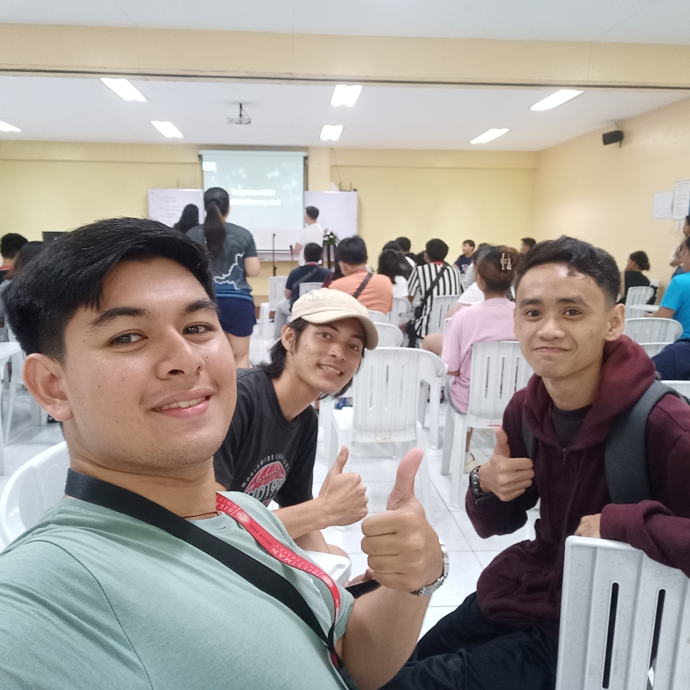
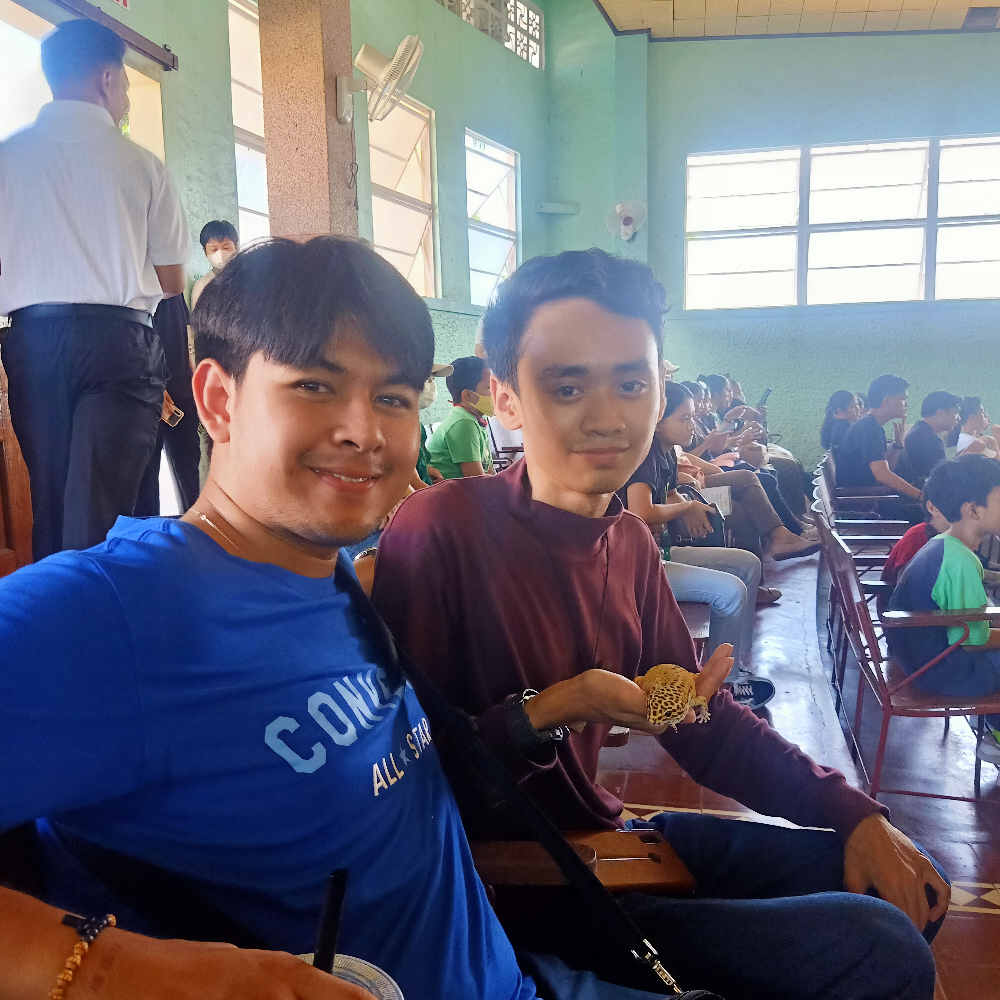
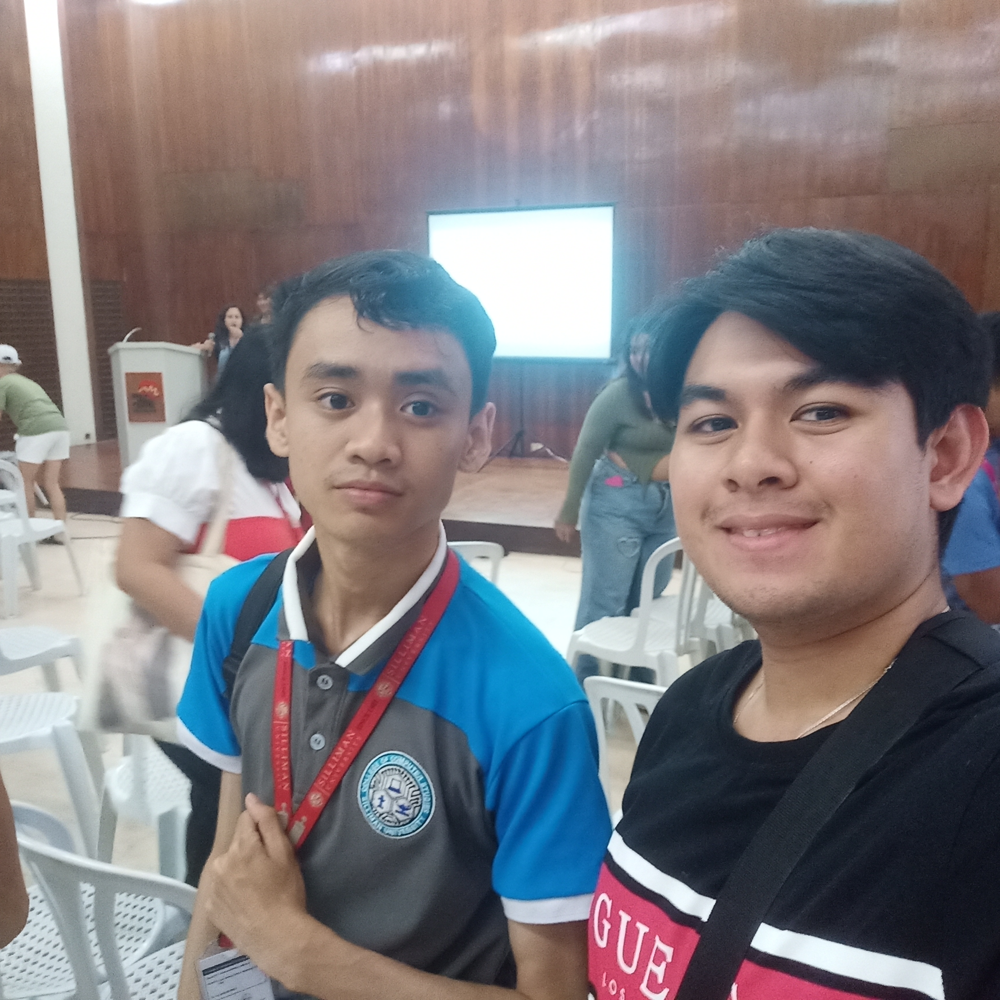

Guidance and Counseling Activity

Aug.22,2023
Organizer: CCS
Points: 1
Taking part in the guidance and counseling activity feels like having someone
there to help untangle the knots. The ATA hall was large and free to move around in for the activity, and
the speaker was very engaging and encouraged enthusiasm. There's this reassuring feeling knowing that there's support
available, whether it's about school, personal stuff, or just needing someone to listen. Me and my friends thoroughly
enjoyed every single part of it.
Participating in the guidance and counseling activity offers a sense of relief, akin to having a guiding
hand to unravel life's complexities. It's not solely about receiving guidance; it's a haven where thoughts
can be freely expressed, enabling the untangling of thoughts and gaining clarity amidst life's challenges.
The comfort lies in knowing that there's a support system available, be it for academic concerns, personal
issues, or merely seeking a listening ear. Having a space where honesty reigns and one can navigate through
difficulties without fear of judgment is truly valuable.
This activity acts as a vital resource, extending beyond conventional advice-giving to fostering a safe and
non-judgmental environment. It's a platform that acknowledges the multifaceted challenges individuals encounter
and provides an avenue to address them. The reassurance of having a supportive space to share thoughts and emotions
while receiving guidance and understanding cultivates a sense of trust and empowerment. It's an opportunity to
tackle life's hurdles with an ally, working through issues and gaining insights without the weight of judgment
or criticism. Ultimately, it's the availability of this supportive framework that makes navigating life's challenges
feel less daunting and more manageable.
Because of the School Guidance and Counseling activity, I feel more supported and understood. Attending this event
has given me a space to talk through things and gain clarity on various issues. It's reassuring to know there's help
available, whether it's about school, personal matters, or just needing someone to listen. Ultimately, because of
this event, I am more equipped to handle challenges and feel less alone in navigating difficult situations.
Balik Talent: Lecture on Syntaxes, Strategies and Structure
Aug.22,2023
Organizer: CCS
Points: 1
Going through a lecture on strategies and structures for success feels like getting
a roadmap with all the secret paths highlighted. The ATA hall was once again very organized an spacious, while the
speaker chosen presented his lecture very well and imparted a lot of knowledge on all of us. There's this
practical wisdom shared that makes you rethink your approach to things. It's pretty neat to hear stories and
insights that can actually shape how you tackle life's hurdles—it's like getting a head start on the journey
toward your aspirations. I was an observer to this event.
Participating in a lecture focused on strategies and structures for success feels akin to acquiring a treasure
map marked with hidden trails. It surpasses a mere discourse on achieving triumphs; it's an invaluable manual
delineating the course to overcome obstacles and reach aspirations. The session imparts practical wisdom that
prompts a reevaluation of one's approach to various facets of life. It's intriguing to absorb anecdotes and insights
capable of reshaping the approach toward surmounting life's challenges; it's akin to gaining a head start on the
path toward realizing personal ambitions.
The lecture offers a wealth of insights that transcend theoretical advice, offering actionable strategies applicable
to real-life scenarios. It serves as a guiding beacon, illuminating the potential strategies and structures pivotal
in navigating the complexities of pursuing goals. The firsthand experiences and shared wisdom provide a unique
perspective, equipping individuals with a toolkit to face hurdles and achieve milestones. The lecture doesn't just
impart knowledge; it inspires a reimagining of one's journey, fostering a mindset geared toward success and resilience
in the face of challenges. Ultimately, it offers a transformative outlook, steering individuals toward a more purposeful
pursuit of their ambitions.
Because of the lecture on strategies and structures for success, I feel more equipped to tackle challenges and pursue
my goals. Attending this event has provided practical insights that reshape how I approach hurdles in life. It's like
gaining a roadmap filled with useful tips to navigate towards my aspirations. Ultimately, because of this event, I am
more confident and focused on achieving success in my endeavors.
Igniting Creativity
Aug.23,2023
Organizer: CCS
Points: 1
Engaging in a creativity-boosting activity feels like opening a door to a room
full of ideas waiting to burst out. It's not just a task; it's a chance to let imagination run wild, to
explore without limits. There's this spark that comes alive as you dive into it, discovering new ways to
express thoughts and concepts. It's pretty cool how a simple activity can unleash a whole world of creativity
and show just how much potential is bubbling under the surface. I was a participant at this event
Participating in a creativity-boosting activity is akin to stepping into a vibrant room brimming with dormant
ideas ready to spring to life. It transcends the notion of a mere task; it's an invitation to unleash boundless
imagination, fostering exploration free from constraints. There's an invigorating surge as one immerses into the
activity, unlocking pathways to express thoughts and concepts in unconventional ways. It's fascinating to witness
how this simple endeavor becomes a catalyst, unearthing a reservoir of creativity and revealing the vast potential
simmering beneath the surface.
The activity becomes a conduit for uncharted territories, inviting individuals to traverse the landscape of their
own ingenuity. It's an opportunity to break away from conventional thinking and embrace the freedom to ideate without
boundaries. In this space of uninhibited creativity, there's a sense of liberation that allows thoughts to cascade
into innovative avenues, demonstrating the incredible reservoir of ideas within each participant. It's a testament
to the boundless potential hidden within, waiting to be tapped into through the exploration of uncharted imaginative realms.
Because of the creativity-boosting activity, I feel more inspired and imaginative. Attending this event has sparked
new ideas and ways to express myself creatively. It's like opening a door to a world of innovative possibilities.
Ultimately, because of this event, I am more enthusiastic about exploring my creative potential and discovering fresh
perspectives in my endeavors.
Balik Talent Lecture: Success, It's all about the Mindset
Aug.24,2023
Organizer: CCS
Points: 1
Learning about success from a mindset perspective feels like getting the backstage
pass to achievement. The ATA hall was very clean and pristine, and the speaker was very well versed in his field
and very knowledgeable. There's this eye-opening moment when you realize it's not just about luck or circumstances—it's about
how you approach things mentally. It's pretty empowering to know that success isn't just a destination. Me and my friends
entered the room with curiosity and left feeling educated. Me and my friends were observers.
Exploring success from a mindset perspective feels like gaining privileged access to the inner workings of
accomplishment. It surpasses the conventional emphasis on the outcome and delves into the profound understanding
that our thoughts significantly influence our trajectory. There's a transformative moment when one grasps the
notion that success isn't solely hinged on luck or external circumstances; it pivots on our mental approach.
This realization becomes a revelation, highlighting the empowerment derived from recognizing that success isn't
merely a fixed endpoint; rather, it's a transformative shift in mindset that steers the course of our journey into
uncharted territories.
Understanding success through the lens of mindset engenders a sense of empowerment, offering a fresh outlook on
the path to achievement. It serves as a beacon, illuminating the significance of mental attitudes and approaches
in shaping the outcomes we aspire toward. This perspective shift introduces a new paradigm where success isn't just
an external destination but an internal transformation that molds our journey. It's an awakening that underscores
the profound impact of mindset shifts, providing a compass that navigates us towards a more purposeful and fulfilling
direction in our pursuits.
Because of the lecture about success and mindset, I feel more empowered and focused. Attending this event has made
me realize the importance of my thoughts in shaping my achievements. It's like gaining a new perspective that success
isn't just about luck, but also about how I approach things mentally. Ultimately, because of this event, I am more
motivated to adapt a positive mindset to guide me toward my goals.
Co-Inspect Philippines Industries Lecture:
Current trends and soft skills relevance in the industry
Aug.25,2023
Organizer: CCS
Points: 1
Attending a lecture on current trends and the importance of soft skills in the
IT industry feels like peeking into the crystal ball of technology. It's not just about coding and technical
know-how; it's about understanding the human side of innovation. There's this realization that in a world
driven by tech, things like communication, adaptability, and teamwork are just as crucial as lines of code.
It's pretty eye-opening to see how these skills play a role in shaping the future of technology and how being
more than just tech-savvy can open up new opportunities in this ever-evolving field. I was an observer in this event.
Participating in a lecture focusing on current trends and soft skills within the IT industry offers a glimpse
into the future landscape of technology. It transcends the traditional emphasis solely on technical proficiency,
emphasizing the significance of human-centric aspects in innovation. This realization unveils the understanding
that within a tech-dominated world, abilities such as effective communication, adaptability, and collaborative
teamwork hold equal weight to coding prowess. It's illuminating to witness how these non-technical proficiencies
shape the trajectory of technology's evolution, recognizing that being well-versed in these areas can unveil diverse
opportunities in this dynamic field.
The lecture acts as a revelation, showcasing that proficiency in soft skills is as pivotal as technical expertise
in driving the IT industry forward. It underscores the vital role of these interpersonal capabilities in propelling
innovation and fostering a holistic approach to technological advancements. This broader perspective unveils that
success in the IT domain extends beyond technical mastery; it encompasses a synergy between technological prowess
and well-honed soft skills, paving the way for a more versatile and adaptable workforce capable of navigating the
constantly evolving tech landscape. Ultimately, it encourages a paradigm shift, acknowledging that a multifaceted
skill set encompassing both technical and soft skills is the key to thriving in the ever-evolving IT industry.
Because of the lecture on current trends and the importance of soft skills in the industry, I feel more aware of the
broader aspects of success. Attending this event has highlighted that beyond technical know-how, skills like communication
and adaptability are crucial. It's like realizing that being versatile and having good teamwork can shape the future in
any field, not just technology. Ultimately, because of this event, I am more motivated to develop a well-rounded skill
set that goes beyond technical expertise.
CCS Trivia
Aug.24,2023
Organizer: CCS
Points: 1
The school trivia game event was a chance for everyone to test their knowledge
and have a great time. The room at ATA was spacious and chairs were organized cratively, while the speakers
,whhich are part of the student government were very engaging. The room was buzzing with excitement and friendly
rivalry as teams went head-to-head, trying to answer questions on various topics. Me and my friends certainly had loads of fun as participants.
The school trivia game event was an eagerly anticipated opportunity for students to showcase their knowledge
and revel in a vibrant atmosphere. Amidst the room filled with anticipation, laughter, and an air of friendly
competition, teams enthusiastically engaged in a battle of wits, vying to outshine one another with their quick
recall of information across diverse subjects. It was a wonderful sight to witness the energy that surged through
the space, fostering an electric buzz as minds raced to find the right answers. Beyond the thrill of the game,
it was remarkable to observe how this simple yet engaging activity united everyone, igniting a shared passion for
learning and discovery while fostering camaraderie among peers.
The event not only fueled the competitive spirits but also served as an educational platform, offering a fun and
interactive way for participants to expand their knowledge horizons. Each question posed was a chance for individuals
to delve into unfamiliar territories, sparking curiosity and prompting a thirst for more information. What stood
out most was the realization that amidst the quest for victory, the true essence of the event lay in the joy of
learning and the celebration of intellectual diversity. The trivia game didn’t just entertain; it acted as a catalyst
for fostering a sense of community, where students bonded over their shared love for acquiring knowledge in an exhilarating,
game-driven setting.
Because of this event, I am more excited about learning. I feel closer to my classmates, having fun while
answering questions together. I've realized how much I enjoy friendly competition. It made me curious to
explore new topics outside of school. Overall, I'm more connected and enthusiastic about sharing what I know
with others.
SPUD Pet Show and Lecture on Animal Care
Oct.28,2023
Organizer: SPUD
Points: 1
Attending the pet show and animal care lecture felt like stepping into a
lively zoo right in the school. The Fleur de Lis Hall was very homey and welcoming, while the speakers were very
engaging and entertaining to listen to all-in-all. Seeing students proudly presenting their
pets while learning tips on proper care was heartwarming. It's pretty neat how an event like this
brings together both the joy of having pets and the responsibility that comes with keeping them healthy and happy.
Me and Greg were participants to this event.
The pet show and animal care lecture transformed our school into a bustling hub of furry and feathered friends,
offering an immersive experience akin to strolling through a vibrant zoo. It wasn't merely a display of adorable
animals; it was an educational journey delving into the essential aspects of responsible pet ownership. Witnessing
fellow students enthusiastically showcase their beloved pets while absorbing invaluable advice on nurturing their
well-being was genuinely heartening. The event beautifully blended the excitement of showcasing pets with a crucial
lesson in understanding the commitment and care required for their welfare, creating an atmosphere of warmth and learning.
The gathering was a mosaic of furry companions and a fountain of knowledge, illuminating the significance of ensuring
our pets' happiness and health. It was a remarkable amalgamation of joyous moments celebrating the companionship of
animals while instilling a profound sense of responsibility. The event not only underscored the delight of bonding
with pets but also underscored the importance of empathy and attentiveness in catering to their needs. It was a delightful
reminder that the love for our animal friends is enriched when coupled with the understanding of their needs, creating
a harmonious balance between the sheer joy they bring and the care they deserve.
Because of this event, I am more aware of how to take care of pets. I feel closer to my classmates,
sharing stories about our furry buddies. I've learned that having a pet is a big responsibility. It
made me appreciate the joy pets bring into our lives. Overall, I'm more mindful about being a good pet owner.
Ang Sandigan Grand Orientation
Nov.22,2023
Organizer: SU - Ang Sandigan
Points: 1
Attending an orientation for a school organization focused on social issues felt
like finding a community driven by purpose. The MV Hall was very homey and comfortable, while the speakers were not
awkward and felt just like friends when interacting. There was this vibe of shared determination and enthusiasm
to tackle real-world problems. It's pretty inspiring how a group like this isn't just about discussions but
about taking action, standing up for causes that matter, and knowing that even within a school, we can create
ripples of change in the larger world. We were participants in this event.
Attending the orientation for this school organization was like stumbling upon a haven where a shared passion
for societal change ignited a palpable sense of belonging. It was more than a club—it was a sanctuary for individuals
driven by a collective purpose to effect meaningful transformations. The atmosphere buzzed with a contagious
energy, a fusion of camaraderie and a resolute spirit aimed at confronting pressing issues. Witnessing this shared
dedication to fostering change instilled a sense of hope and belonging, knowing that amidst the school's walls,
a group of determined souls were ready to catalyze action and stand up for what truly matters.
This group wasn't confined to mere discussions; it was a collective committed to active engagement and advocacy.
The orientation emphasized the potency of action, emphasizing that small steps within our school community could
resonate across broader horizons, creating ripples of influence in the world at large. It was inspiring to see individuals
not only vocalizing their concerns but also strategizing and planning tangible steps toward effecting positive change.
The gathering redefined the notion of a school organization, underscoring its role as a catalyst for empowerment and
an avenue for proactive initiatives that transcend the confines of academic settings, aiming to leave a lasting
impact on the greater world.
Because of this event, I am more passionate about making a difference. I feel connected to a group
of people who care about important issues. I've learned that even small actions can create big changes.
It made me believe that our school community can influence the world. Overall, I'm more motivated to stand
up for causes that matter.